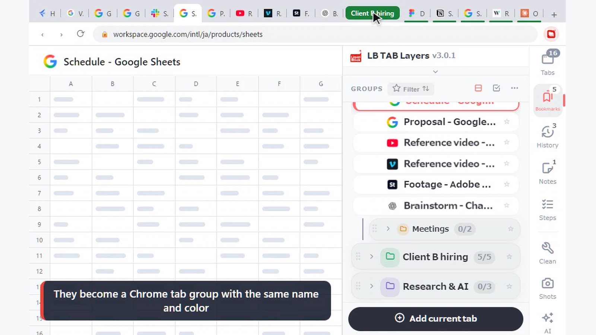
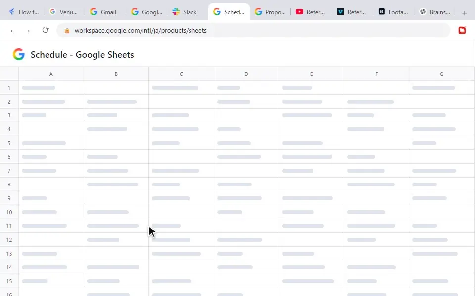
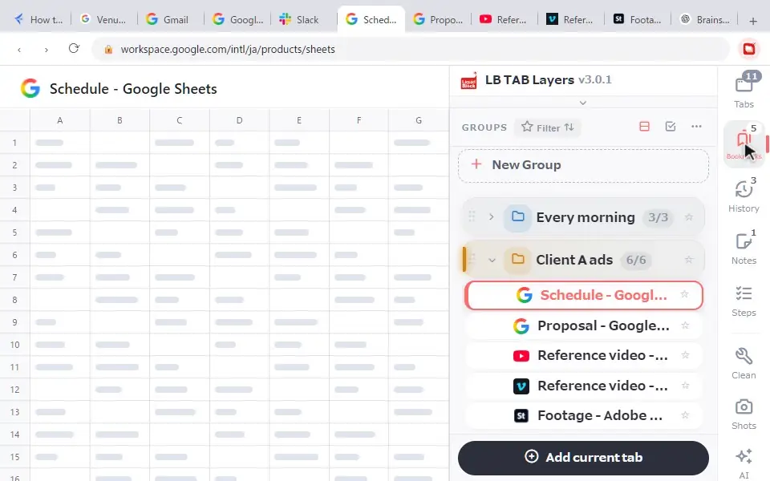
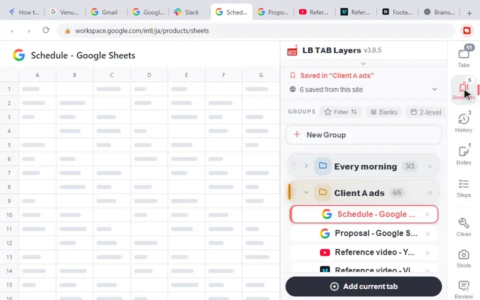
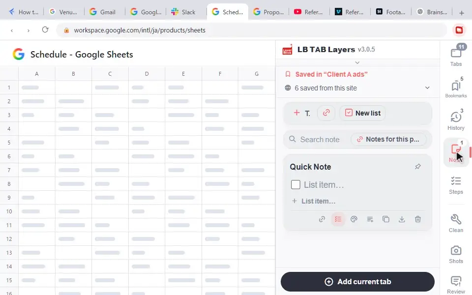
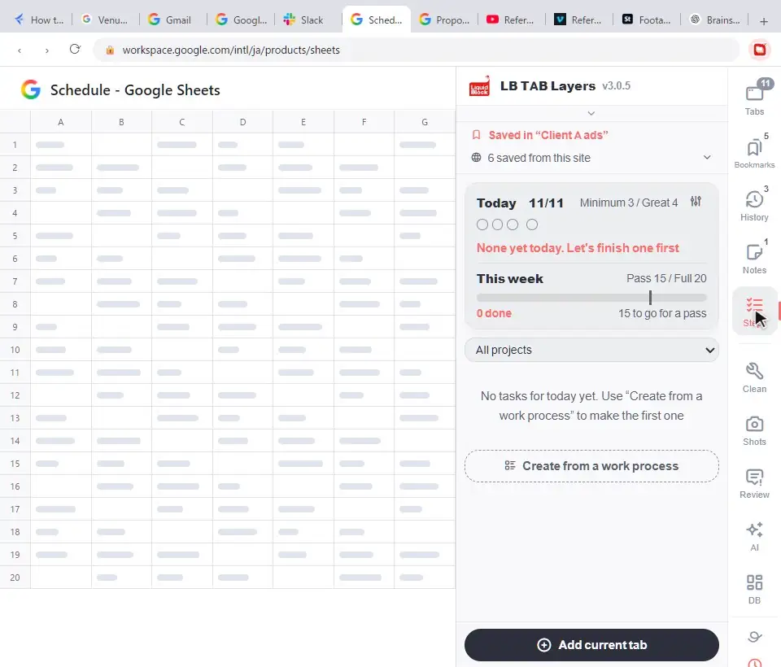
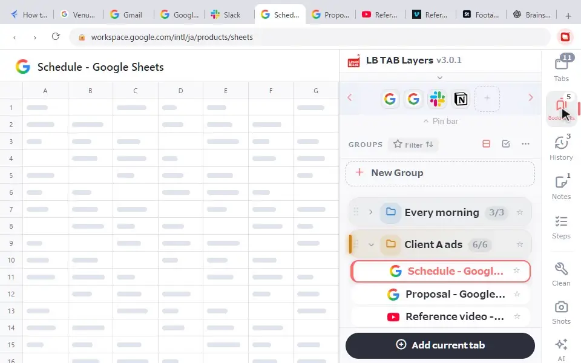

The quickest way to learn LB TAB Layers is to watch what happens: when you click in the panel, the tabs in your browser open and close to match. This page shows ten everyday actions, each recorded with the browser on the left and the side panel on the right. If you just installed it, start with the quick start.
Each animation shows the browser on the left and the LB TAB Layers side panel on the right. Watch how a click in the panel changes the tabs in your browser.
1. Open and close the panel
Press Alt+T (Option+T on a Mac) at any time. The LB TAB Layers icon in the toolbar opens and closes it too.

2. Open a saved tab
Click a group to see the tabs saved in it, then click a tab to open the page. If the page is already open, you simply switch to that tab, so you never end up with the same page open twice.

3. ▶ opens a Chrome tab group
Hover over a group and click ▶ to open every tab in it. They are gathered into a Chrome tab group with the same name and color, so you can tell at a glance which project each tab belongs to. When you are done, ■ closes that tab group. Your saved tabs stay saved.

If you prefer not to use tab groups, you can turn this off in Settings.
4. Save a tab from the right-click menu
In the Tabs view, right-click the tab you want to keep, choose Save to Folder, and pick a group. It does not have to be the tab you are looking at.

5. Make a group inside a group
When a project grows, split it one level further. Hover over a group and choose “…” → Add subgroup. For example, put “Meetings” and “Assets” inside “Client A”. The free version allows two levels.
6. Change a group’s name and color
Choose “…” → Edit (name, icon, color). The color is also used for the Chrome tab group when you open the group with ▶.

7. Reopen a closed tab from today’s history
Closed something you didn’t save? No problem. History in the side column lists the pages you visited today, newest first. Click one to open it again.

8. Notes linked to the page you’re on
In Notes, the link button (New note for this page) creates a note just for the page you are looking at. The next time you open that page, the note is right there. Handy for questions to raise in a meeting or for notes on work in progress.

9. Steps: break work into steps
In Steps, choose Create from a work process, pick a template and create it. You get a checklist of steps. A task only counts as done when every step is checked, and you can see today’s and this week’s progress.

10. The pin bar: daily sites in one click
Click an icon on the pin bar at the top of the panel to open that site. Add more by right-clicking a tab or bookmark and choosing Add to pin bar (up to 12). Right-click a pin to remove it.

🔒 Everything you save is kept as Chrome bookmarks. Groups become bookmark folders, so they stay even if you remove the extension. Data kept inside the extension, such as notes and Steps, can be exported from Settings.
Frequently asked questions
Q. Can I open a group without making a Chrome tab group?
Yes. Turn off the tab group option in Settings. ▶ still opens all the tabs.
Q. How many levels of subgroups can I make?
Two levels in the free version, unlimited in PRO. Every PRO feature is free for 90 days after you install.
Q. Are today’s history and Steps free?
Both are PRO features, and both are free during the first 90 days.
Q. How many pins can the pin bar hold?
Up to 12. Right-click a pin to remove it.
▶ See it in action
Managing bookmarks and tabs together in the sidebar. (The video shows the Japanese UI.)
Click in the panel, and your browser follows.
Keep tabs by project, open with ▶ and close with ■. No account needed · Saved as Chrome bookmarks · Every feature free for 90 days
Add to Chrome — it's free →